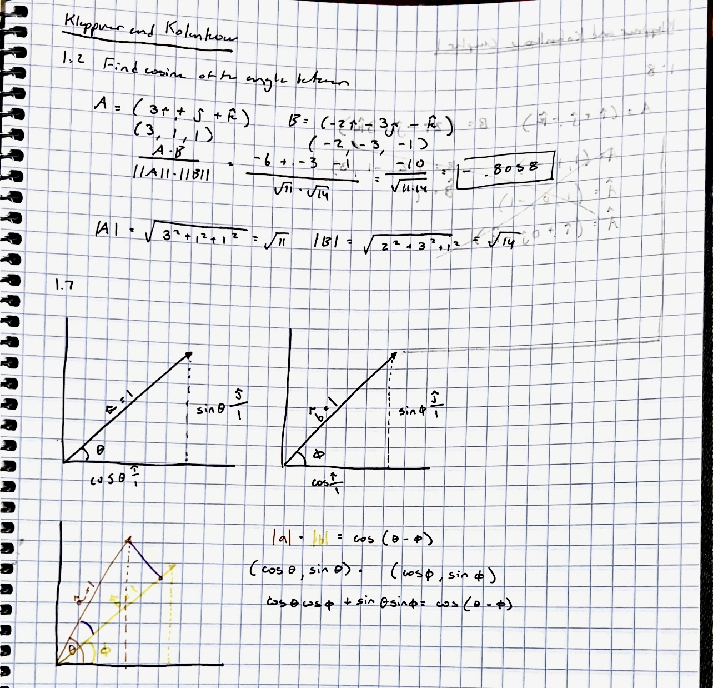

My First Website
How to Teach Yourself Physics: A very brief, useful guide from an expert in proactivity
Hello, this is a quick introduction to myself.
I'm a fifteen (soon to be sixteen) year old from Boston. I watched one too many episodes of Cosmos, and now I want to be an astrophysicist
I love cookies n' cream ice cream and kettle corn, also Kirkland Signature dried mango
Through my incredible disciplinary skills, I was so aware of summer college classes, that I applied for none of them
now it is way past the deadline, and I am cramming carefully studying physics on my own
This year, I really hope to qualify for the National Astronomy Competition, so that I can represent the United States in the IOAA!
I hope with this blog I can look at my progress and reminisce on how easy it used to be
Thanks for following my incredible blog!
Thursday May 15th, 2025
I'm very grateful for the increased interest in my astrophysics blog! I originally thought that this would be something that
Only I would look at, but I have three viewers!
Due to this incredible news, I am going to go over a problem that I did recently which a couple of robotics members were interested in

What you should know about this problem is that it's trying to trick you. It's trying to make you think
that the magnitude matters in this situation, however, the only thing that matters is the period in which the dip happens.
You can see that the peak dip is around in between 2014 and 2015.
Then, again in between 2018 and 2019 it dips again to a small change in apparent magnitude, but still a dip. From there, now you know the period
Once you know the period, you can use Kepler's incredible third law to find the mass off the period and the semi-major axis (given to us in the problem: 14.8 AU
During the Renaissance, or I guess the Scientific Revolution, whatever you call it, Johannes Kepler, an incredible 'natural philosopher' discovered that
the period of an orbiting body is proportional to the semi-major axis of it's orbit. It's summarized in this equation.

Plug and chug and you get our answer, 46 M☉, or 46 times the mass of the sun.

I would be pretty mad if somebody drew a portrait of me that looked like that.
Anywho, today was an easy day, I guess I just reiterated what I had learned yesterday, which was interital frames of reference.
Stay Spacey!! - Lily
Honorable Mention: Anderson Lee
Wednesday May 14th, 2025
Okay a wonderful update. I read the NEXT section of Kleppner and Kolenkow and I finally get it. Do I?
Well to begin, this section essentially lays out Newton's three laws. Which I previously knew from high school level physics (Thanks Mr. Smalley!)
Anywho, the first law was the interesting one that I learned today.
This will be very interesting to my new viewers. Essentially, you know that an object in motion remains in motion unless acted upon by a force.
However, what's NOT taught in high school physics is that Newton is really talking about inertial reference frames
He's talking about in inertial frames, everything is moving at a constant velocity unless acted upon by a force
But anywho, this is the really cool part. An inertial reference frame basically means that an object appears to not be accelerating
Think about it. Imagine you're on the highway inside of an accelerating car. To you, you're stationary, and the road is accelerating. However, to the road, your car is accelerating.
This is really cool!!! Basically, stuff like acceleration, velocity, etc is all relative!! It's all relative!!!!
anywho, what does the car scenario have to do with all this.
I want you to imagine that you're in an accelerating space ship. You float past an asteroid. To the asteroid, you're accelerating. To you, you're stationary and the asteroid is accelerating.
Confused? I was too!
Because you seem stationary in your inertial reference frame, as you move past the asteroid, it seems as if the asteroid is accelerating.
However, the asteroid sees you accelerating!!!!
Now, imagine all the people!
Anywho, today was a wonderful day for me. It was mostly theoretical and less mathematical.
I'm really learning that you have to corroborate different sources of learning.
It can't just all be K&K, or just Professor Dave, or just Walter Lewin, or Flippin' Physics!!
(Honorable mention of the day: Liam Bridgers)
(Honorable mention of the year!: Ilan Bernstein)
Tuesday May 13th, 2025
Captain's log -297636.3404680365
I'm 90% sure that's what Captain Kirk says.
Today was a struggle day (everyday is when you're studying physics!)
I think when people say that physics is easy, they're lying a little bit. Or a lot. Like anybody who thinks that they know quantum mechanics or astrophysics
has clearly never sat in front of a basic mechanics textbook and studied their butt off! It's hard!!! Anywho, here's what I learned today. Even if I learned a little bit,
I still have plenty of time to study basic mechanics (8 months), before my massive astrophysics test against the smartest kids in America
Some people that I know think that they're the smartest kid in America. If I adopt that mindset, maybe I will have the confidence that they have.
Enough self reflection though! Here's some wonderful physics to teach, Feynman style!

The hardest part of a physics problem is getting it started. It more or less looks a little bit easy until you figure out the units. That's HARD
(it's not) One thing I learned from my brand new textbook that was acquired VERY legally is that you have to first tinker around with the units.
see what works, see what doesnt. See how x affects y, see how mass affects acceleration, yada yada (I'm an expert in vocabulary as you can see!)
Anywho, a very silly problem that I got started on included escape velocity. Goofing around with the units of Newton's Universal Law of Gravitation. Basically, you break it
down to the fundamental units. I'm not talking acceleration and force. I'm talking units that don't rely on other units. If you think about it, acceleration is m/s^2
(still figuring out how to have an exponent in my equations lol) however, it all comes down to a couple of silly fundamental units. Mass, length, and time. Pretty much errythang
is made up of this stuff. This is so exciting to me though. Like everything can be connected!! Oh boy, oh boy, the connections! It's wonderful. If we say that length is L, mass is M, and time is T
then by...oh goodie!!! This is all very exciting. I mean think of it - oh boy oh boy this is just pure stream of conciousness at this point- but think of it!
Velocity is literally just distance over time...so L/T...BUT!!!!!!! acceleration is L/T^2....oh my god it's all coming together
anywho, I attempted and failed many of the questions in my new and wonderful textbook. As shown below:

as you can see it's mostly chicken scratch. I can remember doing a lot more thinking. I hope in the future scientists can document the movie going on in my brain when I'm doing physics. It probably looks like Oppenheimer!
now some super boring self-reflection. I've come to realize this is way harder than I thought. Just as I do every day. This will just be a constant spew of "it's hard I swear I swear"
I guess this will be a diary of my thoughts on physics, with a little bit of physics on the side. I don't want to yap too much, but I think it's important to come back down to Earth sometimes
anywho, this was a very exciting day for me physics-wise, because I have been liberated from MIT OpenCourseWare, and am now checking out a little bit calmer of a textbook.
signing off, Lily!!!!

Monday May 12th, 2025
Today is not the first day of my astrophysics journey, I would say my first day of learning astrophysics (for real, for real!)
was January 1st, 2025, which was when I began studying for the Science Olympiad!
the learning curve was horrible. Some days feeling like you really got it, and other days feeling like the dumbest person on the planet
hopefully physics will go this way for me! Right now, everything is pretty much new to me. I just started on differential equations, and I feel extra dumb today
I just finished the first chapter of Kleppner and Kolenkow, which is more or less the most difficult textbook I've ever read
I think what I learned though, is that it's not really that hard until somebody tells you that it's hard.
I got through it, and I'm like 'yeah this is difficult', but now that I hear that it's infamous I feel even more confused.
The questions are definitely VERY difficult.

Here's a wonderful example of a vector problem. As Richard Feynman said: "If you want to master something, teach it."
Therefore, my 1 loyal viewer will get a wonderful tutorial on how to solve a problem like this one!
The cosine of the angle between the two vectors would be the dot product of the vectors divided by the product of their magnitudes.
Basically, you multiply every value (x,y,z) in the vector, and multiply it by the (x,y,z) of the other vector. So if we have vector A(Ax,Ay,Az) and vector B(Bx,By,By)
you would find the product of each individual component of the vector, so (Ax * Bx, Ay * By, Az * Bz), and then add them together!
Like so: (Ax*Bx + Ay*By + Az+Bz)
Now that you know this, you can find the magnitude of the vectors through the pythagorean thereom. I am still very new to programming, so you will have a very terrible version
of a radical. Hopefully I will learn this in the future. For example, the magnitude of A would be the square root of (Ax^2+Ay^2+Az^2)
The magnitude of B would be the same. Now that you know the magnitude of A and B, and the dot product, you can find out the cosine of the angle between them!
The wonderful thing about the dot product is that it's equal to the product of the magnitudes multiplied by the cosine of the angle between them.
This convenience makes it so that we can just divide the dot product by the product of the magnitudes and find the cosine of the angle between them. Yay!
You can see my magical work above.

look at Richard Feynman! isn't he so cute?